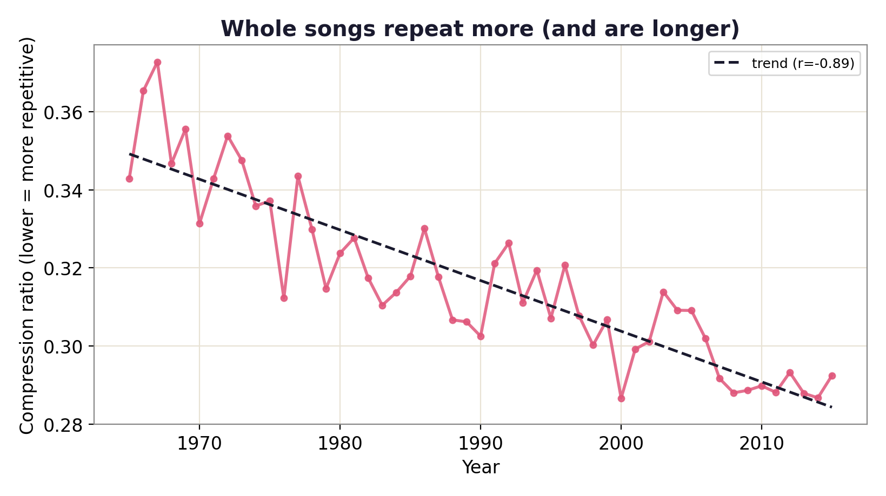
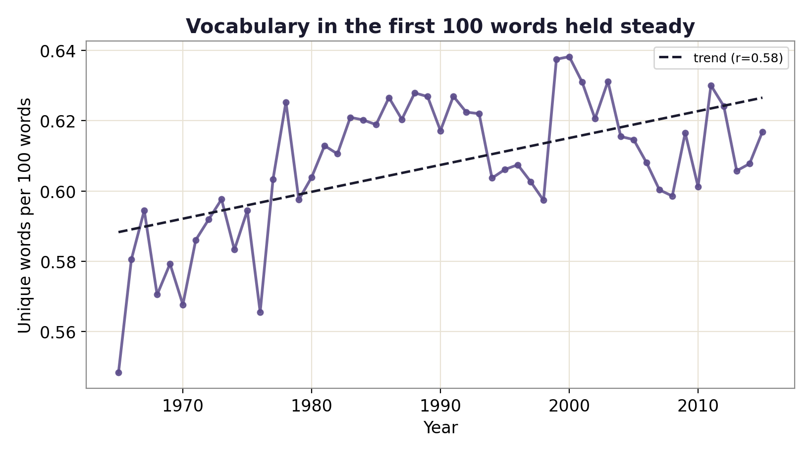
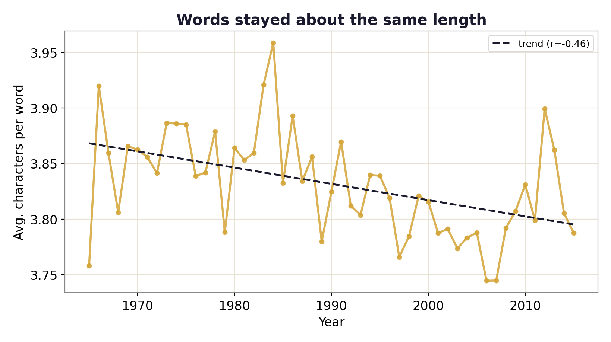

Data story · 4,816 Billboard hits · 1965–2015
Are Song Lyrics Getting Simpler?
"Modern pop is just the same word over and over." It's a popular complaint. I tested it against fifty years of chart-topping hits — and the real answer is more interesting than the cliché.
The claim, and the test
It's a common gripe that lyrics have gotten dumber and more repetitive. To check, I analyzed the lyrics of 4,816 year-end Billboard Hot 100 hits from 1965 to 2015 and tracked four simple measures over time: how long songs are, how varied their vocabulary is, how repetitive they are, and how long their words are.
Hits have doubled in length
The single biggest change isn't subtle. The average charting song went from about 200 words to over 410 — more than double — driven largely by the rise of rap and hip-hop and longer modern song structures.

More repetition — but mind the catch
Whole songs really have gotten more repetitive: compress the lyrics and modern hits squeeze down much smaller, a classic signature of repeated hooks and choruses. The honest caveat: longer songs repeat their hooks more by construction, so part of this is simply that songs got longer.

But the words themselves aren't simpler
Here's the twist that breaks the cliché. When you control for length and look at vocabulary in a fixed 100-word window, richness has held steady — if anything, ticked up. And the average word is the same length it was in 1965. By these measures, today's hits aren't built from shorter or less-varied words.


The findings
- Hit songs more than doubled in length (≈200 → ≈410 words; r = 0.92).
- Whole-song repetition rose sharply (compression r = −0.89), partly because songs are longer.
- Vocabulary richness held steady (unique words per 100 words even rose ~7%).
- Word length is flat — words are no shorter than they were in 1965.
So, simpler?
"Simpler" is the wrong word. Modern hits are longer and lean harder on repeated hooks — which is what people hear and call repetitive — but they aren't made of shorter or less-varied vocabulary. The change is in structure and length, not in the words themselves. It's the same toolkit you can point at any text: I used the identical vocabulary lens on reality TV in my Love Island lexical analysis, and built it into an EPUB reading-level analyzer.
fetch_data.py + analyze.py in the repo.